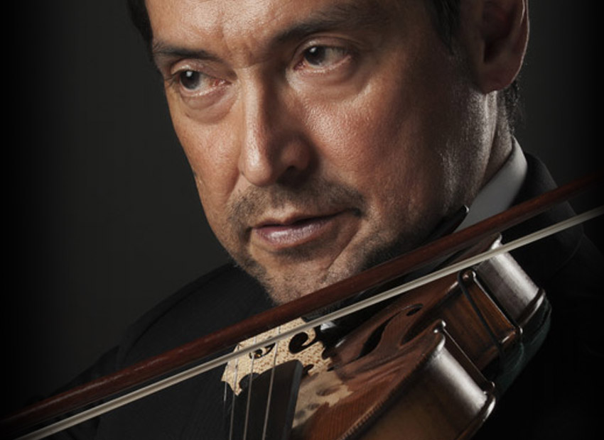

![Inició sus estudios con su madre, la violinista Ruth Lamprea y los continuó con los maestros Luis Biava, la concertista Polaca Ida Haendel, y David Arben, quien fuera concertino de la Orquesta de Filadelfia. Vivió durante varios años en los Estados Unidos, donde estuvo vinculado a agrupaciones como la New World Symphony, Chamber Orchestra of Philadelphia, y la Philadelphia Virtuosi. Con esta última realizó extensas giras por Estados Unidos y Brasil. En este mismo período tuvo la oportunidad de tocar con la mundialmente conocida Orquesta Sinfónica de Filadelfia. Participó en el Festival de Spoleto en Italia en 1994, 1995, y 1996 siendo concertino de la orquesta. Fue ganador del Concurso de Jóvenes Solistas de la Orquesta Sinfónica de Colombia y finalista del Corpus Christi Internacional Competition, en Corpus Christi, Texas. Ha tocado como solista con varias orquestas del país como la Orquesta Sinfónica de Colombia, la Sinfónica del Valle, la Filarmónica de Medellín y la Sinfónica Nacional En la actualidad, además de ser miembro del Cuarteto Santa Fe, es concertino asistente de la Sinfónica Nacional de Colombia, y profesor de violín de la Universidad Nacional.](images/u807-7.png)